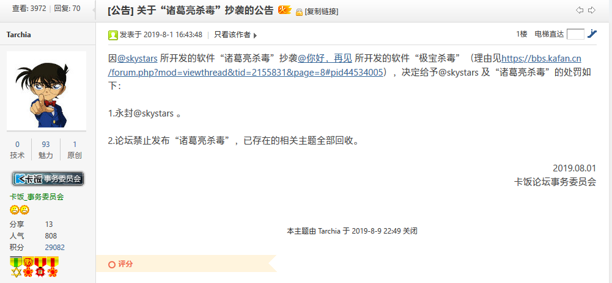

不管你是从诸葛亮杀毒的网站还是其它地方来的，我们都欢迎，此网站是为了揭露诸葛亮杀毒的真实面目，请大家仔细阅读，不要被诸葛亮杀毒团队内的任何成员的花言巧语给蒙骗了。
注：本站所有的消息记录以及文件都是真实可靠的，甚至连诸葛亮杀毒团队的官方人员都承认这些内容。重点内容、容易误解的内容我们会用红字标出。
早期石锤视频（内容可能有所偏差，仅供参考）：https://weibo.com/tv/v/I5fHMpFsc?fid=1034:4412519301719383
在2019年8月28日，诸葛亮杀毒团队成员开始对FinderMister的个人博客进行攻击，导致其个人博客一度无法访问。
诸葛亮杀毒群内聊天记录在2019年9月6日，诸葛亮杀毒团队成员开始爆破TheColdWinter寒冬的个人博客后台，截止至2020年2月2日，其个人博客后台被爆破的证据还保留在TheColdWinter寒冬的微博上。


在2019年4月29日，极宝杀毒作者“你好，再见”在卡饭论坛发帖控诉诸葛亮杀毒抄袭了自己的极宝杀毒，而Skystars在被锤后还矢口抵赖，企图洗白自己。然而他那拙劣的演技最终还是被众人识破了。 原帖链接
在2019年5月23日，极宝杀毒作者“你好，再见”再次在卡饭论坛发帖，称Skystars对其进行造谣诽谤。 原帖链接
在2019年7月29日，Skystars为了洗白自己，在卡饭论坛发帖投诉极宝杀毒作者“你好，再见”对诸葛亮杀毒进行侮辱。不得不说，这种憨批操作真的给我整笑了。 原帖链接
时间来到了2019年8月1日，卡饭论坛版主发布公告，把诸葛亮杀毒给锤了个彻底，并且还封禁了Skystars的论坛账号。此举实属大快人心。
原帖链接

但是，在2019年8月14日，也就是诸葛亮杀毒被石锤后不久，当时还是诸葛亮杀毒管理层成员的软盘君，在诸葛亮杀毒官方论坛发布公告，称卡饭论坛是“杠精聚集地”。这还没完，据笔者所知，他们一边圈地自嗨骂卡饭论坛是“杠精聚集地”，一边在卡饭论坛注册小号下载病毒样本。这种操作笔者也是第一次见。
另外，在诸葛亮杀毒群文件内，有一个名为“垃圾”的文件夹，文件夹内为极宝杀毒和智速安全（诸葛亮杀毒的竞品软件）。不知道Skystars在创建这个文件夹的时候良心何在？